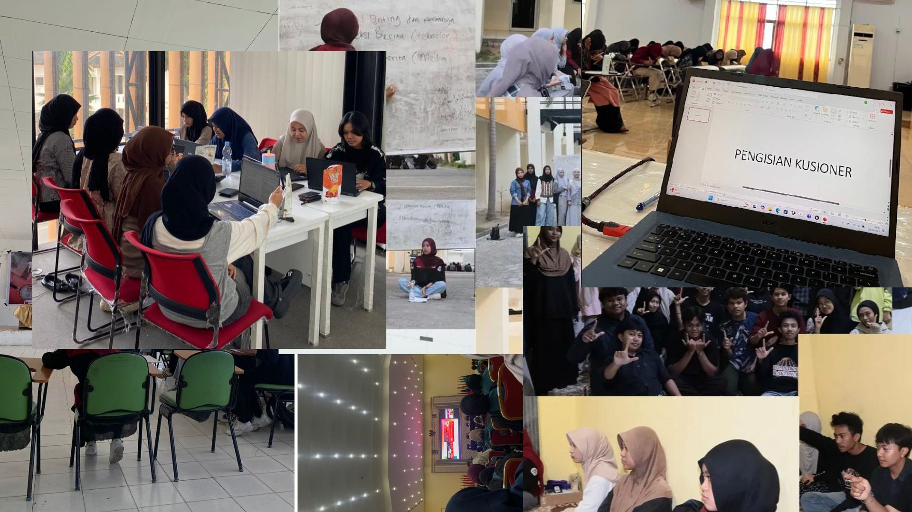

Saya percaya bahwa pengembangan diri merupakan proses yang terus berjalan. Melalui pengalaman organisasi, pembelajaran, dan aktivitas kreatif, saya terus berusaha meningkatkan kemampuan diri baik dalam bidang akademik maupun non-akademik.
Saya memiliki semangat untuk terus berkembang dengan mempelajari berbagai hal baru yang dapat meningkatkan kemampuan serta memperluas pengalaman. Selain mendalami bidang teknologi dan informatika, saya juga aktif mengembangkan minat pada komunikasi, editing digital, desain kreatif, dan public speaking sebagai bentuk pengembangan diri secara menyeluruh.
Melalui keterlibatan dalam organisasi dan kepanitiaan kampus, saya memperoleh banyak pengalaman berharga dalam kerja sama tim, kepemimpinan, serta manajemen waktu. Pengalaman tersebut membantu saya menjadi pribadi yang lebih disiplin, bertanggung jawab, dan mampu bekerja secara profesional dalam berbagai situasi.
Saya ingin terus bertumbuh menjadi pribadi yang kreatif, aktif, dan mampu memberikan dampak positif bagi lingkungan sekitar. Kedepannya, saya berharap dapat memperdalam kemampuan di bidang teknologi, media digital, dan pengembangan diri agar dapat terus berkembang secara akademik maupun profesional.
Beberapa dokumentasi kegiatan dan proses pengembangan diri yang saya lakukan selama mengikuti organisasi dan aktivitas kampus.
